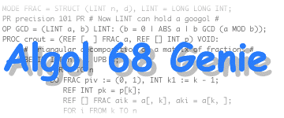

Documentation for Algol 68 Genie Mark 10.1
Documentation for Algol 68 Genie Mark 10.1
|
Example: Lucas numbers
|

|
|
|
CO Using refinements CO
determine first generation;
WHILE can represent next generation
DO calculate next generation;
print next generation
OD.
determine first generation:
INT previous := 1, current := 3.
can represent next generation:
current <= max int - previous.
calculate next generation:
INT new = current + previous;
previous := current;
current := new.
print next generation:
printf (($lz","3z","3z","2z-d$, current, $xz","3z","3z","2z-d$, previous,
$xd.n(real width - 1)d$, current / previous)).
Copyright © 2001-2006 J. Marcel van der Veer.
Algol 68 Genie Mark 10.1 (December 2006)